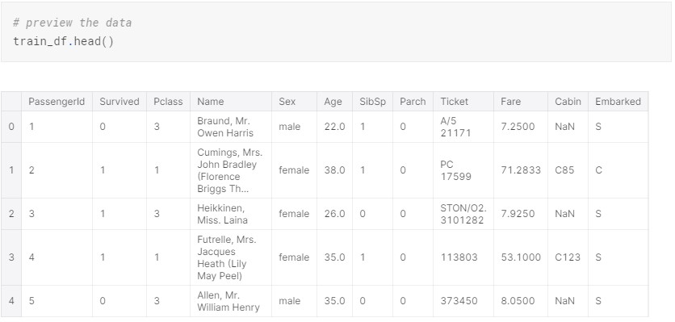
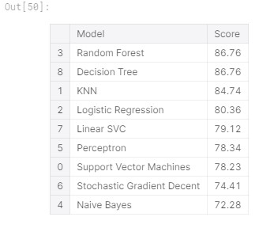
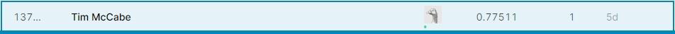

When first learning the basics of machine learning, the first example problem that most data scientist try to tackle is The Titanic Problem. It is a Kaggle competition meant to familiarize yourself with how the kaggle platform works. The competition is simple: use machine learning to create a model that predicts which passengers survived the Titanic shipwreck. The great thing about this data set is that it is not too complex and relitively easy to understand for beginners. The data has very few columns (or features) and needs very little cleaning in order to create effective and accurate models.
The first step in solving any problem is knowing what your trying to find and knowing any other given informations. In this case, our unknown variable is the passenger survival. Our other given information is the data set above. So, now you know your starting point and end point for this project. The real question becomes how do you go from the start to the finish.
Before you start coding, it is important to map out how you plan to approch the problem. For this example, I will be using the Scikit-Learn library and some of its tools to build and train a model. Scikit-Learn and other tools like it have a lot of great documantation to help you understand what specific algorith to use and when to use it. Below is a flow chart, which is a great starting point for understanding which algorithms are appropriate to use depending on your data.

Now that you have a relatively good idea of where you are headed it is time to start planning how you are going to manipulate your data so it can be used in your model. By inspecting the data, you can see that much of it is categorical data. Columns like "Pclass" are already broken down into 1, 2, & 3 which the algorithms can use, but categorical data such as "Sex" are listed as male and female. For data in columns like "Sex", we need to convert the strings of male and female into numeric categories inorder to get an accurate output from the algorithms.
The other kind of data that is in the data set is numeric data such as "Age" and "Fare". This data is not so simple in terms of simply converting stings into integers. However, it can be extremely useful to us once we start plotting this data to notice trends or patterns.
Once all of this planning is done, you can now start to code and follow a basic 6 setp process.
- Read Data and Perform Basic Cleaning
- Select your Features (columns)
- Create a Train Test Split
- Pre-Process (scale)
- Train Model
- Hyperparameter Tuning
Creating a train test split is very simple and basically separates your data into two data sets, one to train the model to make predictions and one to test how accurate those predictions are. Another reason why this machine learning example is great for beginners is this data is already split into training data and test data. Refering back to the flow chart above, we can now train the model with several Scikit-Learn algorithms. We can also see which ones were the most accurate to help us make the final predictions.
After this is done, you can try hyperparameter tuning, but since this is just a beginner level project with a small data set, we will simply make our submission. Submissions for Kaggle competion have strict requiremnts. For this particular exercise, we have to submit a data frame with the first column as "PassengerId" and the second coulmn as "Survived". No other columns can be added otherwise your entry will not count. Kaggle compares your submitted data frame and compares it to the correct data and then judges the accuracey.
Once the results have been submitted, you will be scored and placed on the leaderboard. My first submission scored a 77.511% and this placed me in the top 58% of all competitors. This was only my first attempt at a Kaggle competiotion so I am ok with this result. As I do more projects and learn more about machine learning, I'm sure I could come back and get a higher score and try to be near the top of the leaderboard.
Titanic Data Source by Kaggle via Titanic: Machine Learning from Disaster.